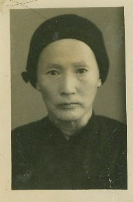
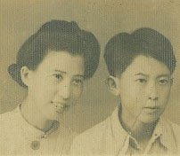
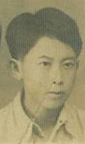
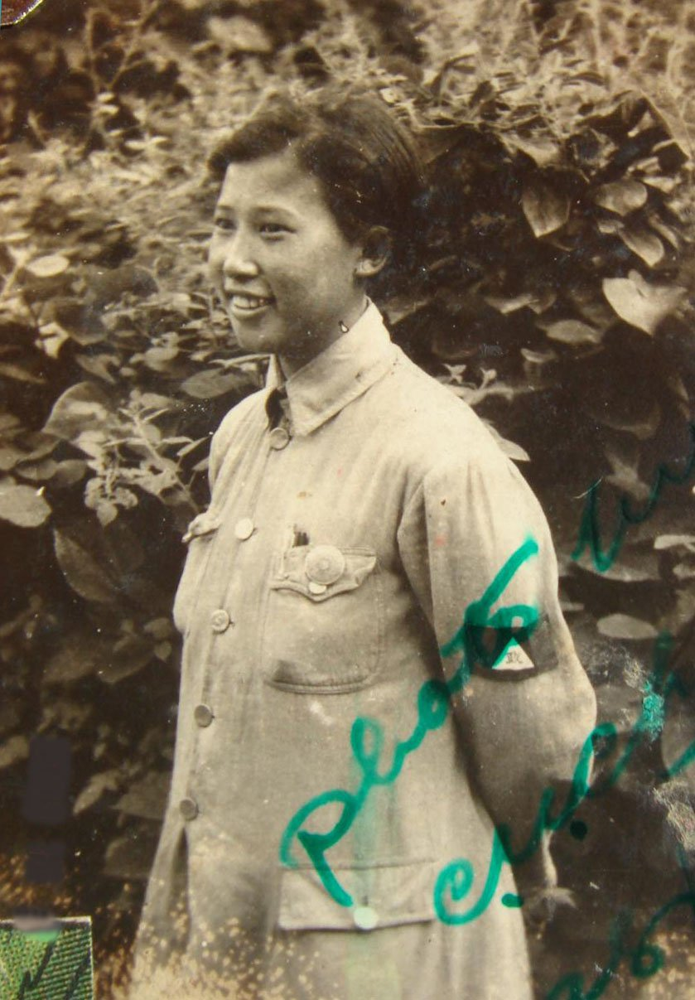
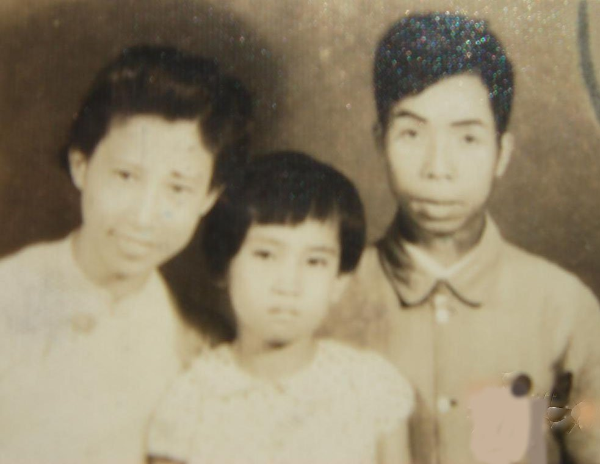
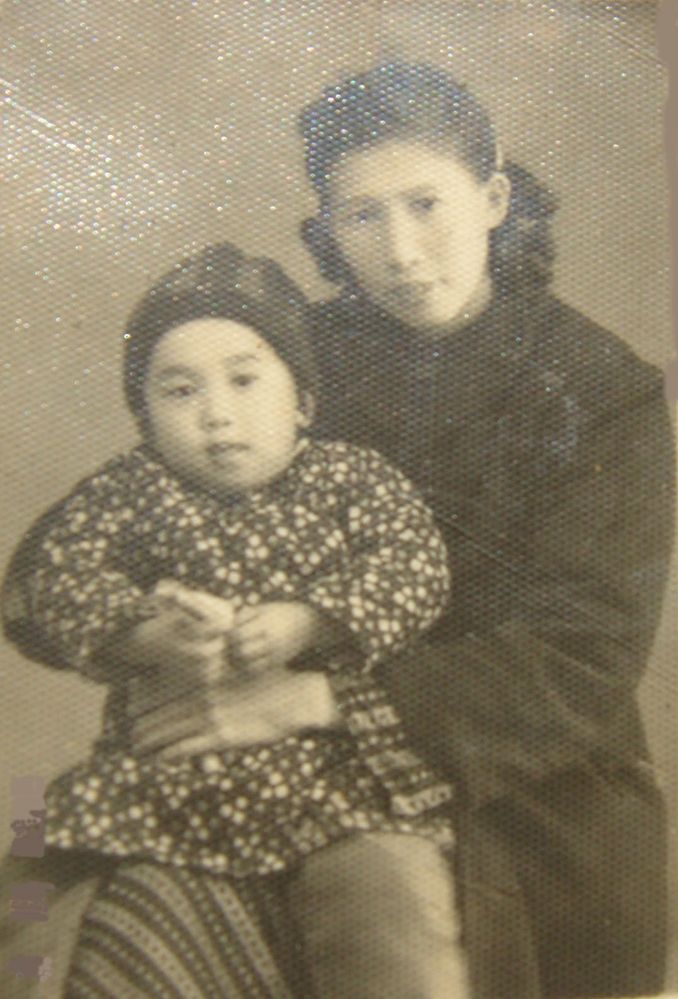
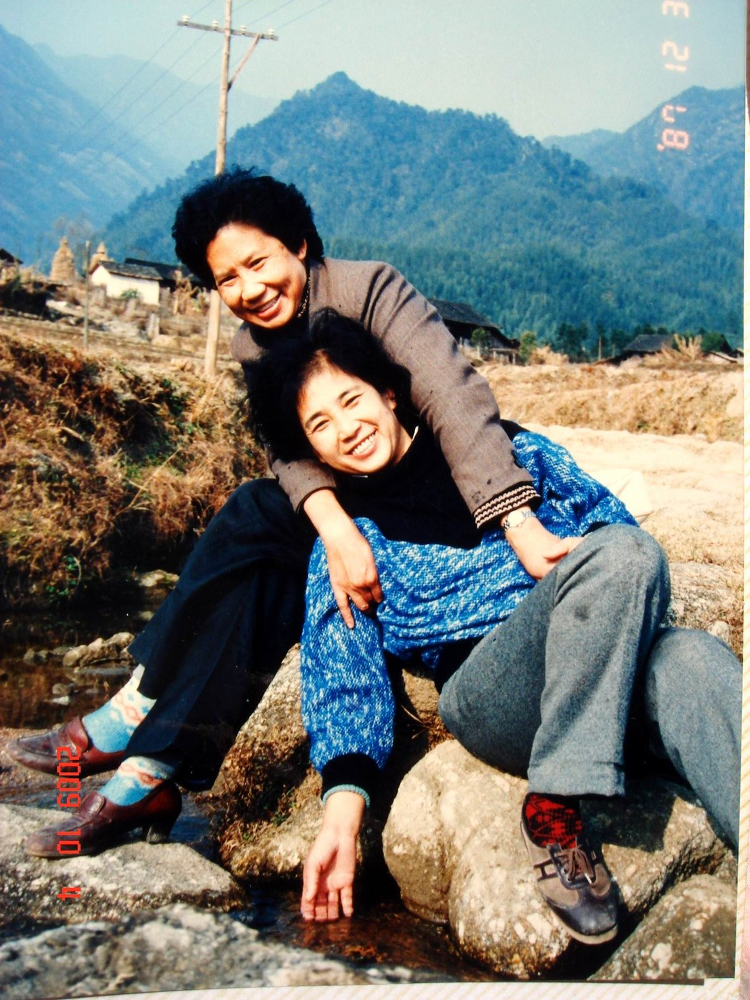
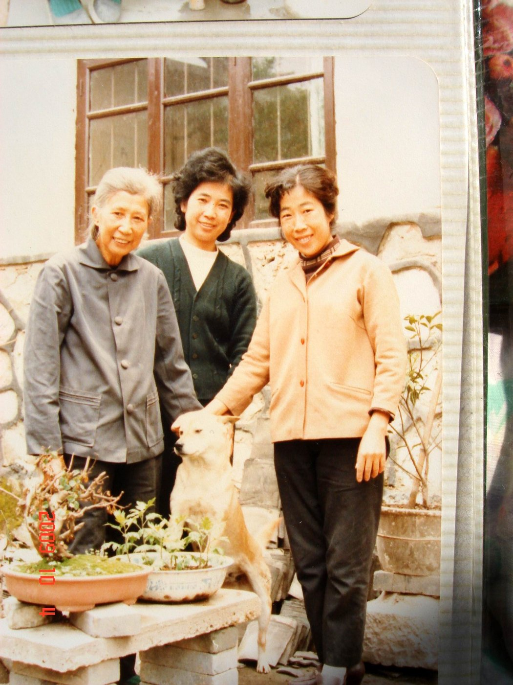
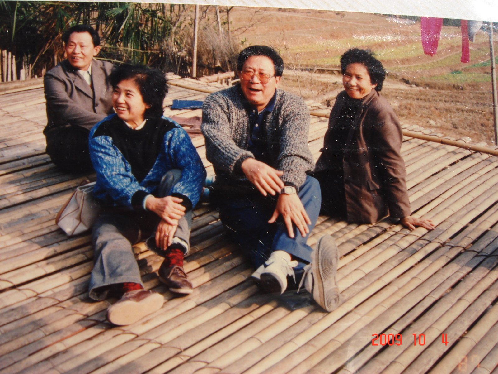
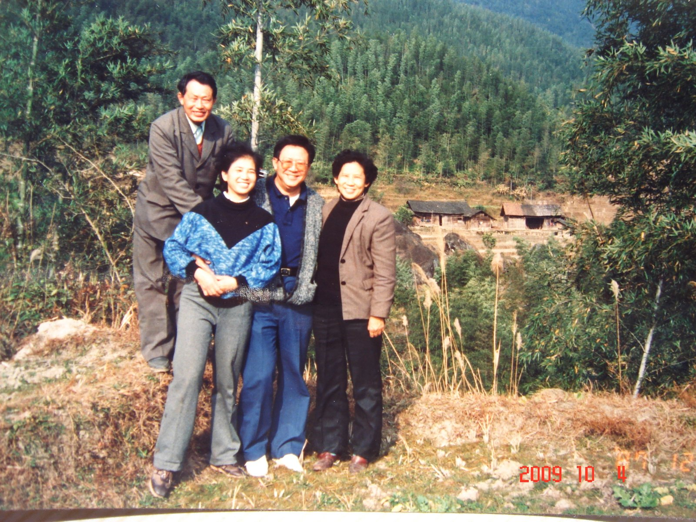

我的外婆家在广西兴安县著名风景区猫儿山附近，一个名叫海武田的小村。它坐落在青山环绕、翠竹满坡的一块山坡上。屋前是梯田，屋后是菜园。不远处一条清澈的小溪流过，潺潺溪水被竹筒引进家门，成为我们日用的天然自来水。这里只有我们一家居住，像是世外桃源般地过着自给自足、与世无争的生活。
我和金秀到外婆家时，比我大一岁的小姨梁莲贞尚未断奶。我去了后外婆的奶就归我了！嘻嘻！我够霸道吧？小姨当然不甘心，但她抢不过我，也只好放弃了。
我在海武田度过了幸福的童年。一生中许多美好的记忆都与这里联系着。我在艺术创作中所依赖的丰富想象力、在面对困难时不怕苦和累、不轻言放弃的倔强性格，都得力于那清新美丽大自然的熏陶和滋养、劳动锻炼及和谐的人际关系的培育。
我的外公与外婆
我的外公叫梁月春，我们海武田的家在外公主持下，是一个和睦的大家庭。他在当地可是一个多才多艺、受人尊敬的人物。他会写春联、会算阴阳八卦、会做纸人纸马、金银元宝；龙头凤凰、房屋家什；会看风水，还会戴着傩面具跳大神，吹着竹笛召神驱鬼。无论红白喜事，人们都来请他。而无论他到哪里做客，他都要把我带在身边，向别人显摆我的"聪明"，说别看我的阿莹小，她肚子里的"板路"（即点子、故事等）多着呢！别人因此称我为"显扬考子"（即最受宠爱的宝贝仔之意）。
外婆名叫陆桂英，她也非常疼爱我。外婆非常勤劳能干，里里外外的家务，操持得井井有条。她做的酒酿、腌的酸菜都非常好吃。堂屋的后边放了一溜的瓦坛，里面装满了各种不同的酸菜，什么豆角、辣椒、洋姜、蒜毫、黄瓜等等。我放学回来，常常先跑到那里偷酸菜吃。空腹吃酸菜肠胃是要付出代价的，只好跑到外面伏在柱子上吐酸水。即使这样，下次还是忍不住去偷吃，只是少吃点。

外婆 · 陆桂英
我与我的舅舅们

妈妈和二舅梁基冠

我的舅舅们 · 家藏老照片
我有 5 个舅舅。大舅名叫梁基永，我刚被送回来时，就是过继给他做女儿的。所以，我小时候一直姓梁，叫梁星文。可惜！我还没有记忆的时候，他就英年早逝。听大人说，他在外面读书时，感染了痢疾（霍乱？），拉肚子拉死了。我叫大舅妈做"娘"，她守了多年寡，后来改嫁给附近一个村的村长。我记得她上轿前，外婆给她煮了两个红糖鸡蛋，她把我搂过来让我吃了。她的泪水滴在我的脸上，我们抱在一起不愿分开。她被抬走后我嚎啕大哭，追在轿后跑了好远。好在后来我上小学的学校就在她的新家附近，可以常常去看她。
大舅基永去世后，老二梁基栋就成了大舅，比我大 6 岁的老三梁基冠则成了我二舅。我是他们的"小尾巴"。在外边上学的他们回来度假，那便是我们的节日。我一直忘不了他们曾从学校带回篮球来与我们一起玩耍、用带回来的消毒水滴在澡盆里给我们洗澡的情形。也许因为有过挨妈妈打屁股、两人在操场相对而哭的共患难经历，我与小时候照顾我的栋舅感情尤深。每逢家里做了好吃的菜，我就把属于我的那份放在碗里留着，然后趁他不注意时，就悄悄拨到他的碗里并快速地用他的饭埋上，怕他再把菜拨回来，就赶快跑开去了。栋舅英俊挺拔，是我心目中最亲近并引为自豪的偶像。我常常向他询问一些好奇的问题，比如"人"是什么变的？他说是猴变的；我又问那猴又是什么变的啊？鱼变的？那鱼又是怎么来的啊等等。不管什么问题，总是爱打破砂锅问到底，直到他也回答不上来为止。
二舅基冠是个美少年，海武田周边的姑娘们大概都很喜欢他。记得有次我跟着他走完亲戚回家的路上，正好遇上了一群年轻的姑娘们，她们拦住他的路不让他走，七嘴八舌地用语言挑逗他，甚至用手去咯吱他。基冠怕痒，被她们弄得满地打滚，她们则开心地笑弯了腰。
我和两个大舅形影不离，晚上睡觉时也不分开。记得有天我们三人在厢房楼上睡觉，清晨天蒙蒙亮时，躺在最外边的我，左边胳膊忽然觉得被掐得好痛！我睁开眼睛，透过蚊帐，看见有一个身体透明、如同影子般的男型人，正从床边离开，用一种蹑手蹑脚的动作向楼梯口那边走去……我吓得大喊一声，从栋舅身上翻滚过去，钻到他和冠舅之间，把被子拉上去蒙住脑袋！事后大家问我怎么回事时，我讲了我看见的情况，并且把那透明人走路的姿势还模仿给他们看。但他们都笑笑，将信将疑地不当回事。有人就说可能是基永大舅的灵魂看我来了，他不喜欢我和别的舅舅那么亲密，因为我是他的女儿。我对这个猜测，内心倒是认同的。这事令我终身难忘，让我相信世界确有灵魂存在。我能够看见，可以解释为小孩子天眼尚开之故。不管别人信不信，我至今仍坚信我之所见是属实的。
开心的乡村小学生涯
大概 5 岁半时，我开始与莲贞小姨一起到六洞村民小学读书。去学校要翻过对面的山，大约要走三里山路。沿路的竹林和树丛，常常是我们把听到的故事与现实加以联想，自己吓唬自己的地方。由于跟外公学习过《三字经》，有学前的识字基础，我们在班上就有点显得出类拔萃。每天在开课前唱完国歌之后，我被老师指定由我念一句、大家跟着重复这一句的方法，带领全班背诵总理遗嘱。
我邻桌的同学记性不大好，常常在识字和背课文时给我使求助眼色，我就悄悄为他打 Pass。但这种小把戏被老师发现了，我们被叫到讲台前伸出手掌，老师用戒尺狠狠抽打我们的手心。但好了疮疤忘了疼，这种"解救兄弟于水火之中"的侠义行为以后又屡屡发生。在经历了屡次被打手心、罚站之后，我终于从前排被调到了最后一排的座位。这样，我们"互通信息"的小伎俩就再也施展不开了。
在学校里的课余游戏，都是一些就地取材的活动，如抛接石头子、跳房子等，但印象最深的，是我和男孩子们玩"争江山"的游戏：一个或两个人先站到一个大石头上，然后其他人轮番向他进攻，夺取他的位置；互相对撞，最后仍能留在石头上的人，便是胜利者。我们这些个头和年龄较小的同学，常常吃败仗。但不甘心的我们，却越斗越勇，竟也有战胜的时候。
开始为课外书所吸引
学校的功课感到吃不饱了，我就开始到阁楼上去翻外公以及妈妈的藏书。尽管有些书读起来似懂非懂，有些字不认识，更不理解书中要表达的深层含义，但连猜带问，越读越有兴趣。至八、九岁时，我已把那些藏书，如《西游记》《聊斋》《红楼梦》《三国演义》《七侠五义》《隋唐演义》，丁玲的《莎菲女士的日记》《在黑暗中》，巴金的《家》《春》《秋》等等，基本都阅读了一遍，有的是两遍。那时记忆超强，像《西游记》，看过后能把某些原文段落一字不差地背下来。黛玉的《葬花词》之类也是如此。
我们这群快乐的小玩伴！（此照片原文档中暂缺）
大姨叫梁婉贞，她长得很美，可惜身体不好，得了肺结核。由于缺医少药，没有知识，她不仅没有得到治疗，也得不到休息。她是家里比较大的女孩，必须帮助外婆做饭、料理家务。结果，不到 18 岁就丧失了生命。我与比我小的舅舅梁基定、梁基兴，以及陆续送回来的大妹妹唐俊德、弟弟唐楚三Tong
我们早上一起出操，我举着一根绑着红布当旗子的竹竿走在前面，喊着节奏，大家排成一行，跟着我在田埂上迈着不那么整齐的步伐。走一圈回来，由我带领大家到厢房楼上一同学习、读书认字或画画。
我是家里的鸡鸭司令，专门负责喂食和检查它们的数量，看有没有被黄鼠狼叼走。新的小鸡孵出来后，我让每人领走一只作为"娇娇鸡"（宠物）。每个人都精心喂养自己的小鸡，看着它们一天天长大，心里充满喜悦。但是，不久我们发现这些小鸡，突然莫名其妙地开始给我们玩失踪游戏！它们几乎平均每天少一只。到了只剩区区的两只时，我们决定在楼上搞一次大搜查。清除垃圾，看看小鸡会藏在哪里？俊德妹妹从角落里抱出一堆旧棉花，她说："这棉花怎么这么沉啊？"突然，她发现棉花里面好像有东西！随着她将棉花扔到地面，一条 5 尺多长的大蛇从棉花团里忽地钻了出来！我们先是一愣，随即行动起来，拿起找得到的竹竿、棍子之类对它进行围堵。它钻进一棵木樑的凹槽里，我们用一根长棍将它顶住，基定找来了一束竹枝，对着蛇使劲抽打直至它再也不动了。我们总算给我们的娇娇鸡报了仇！这条蛇真的很大，我们决定到河边把它解剖，并且在那里把它煮来吃掉。我们知道蛇胆是明目的良药，决定把胆奖励给功劳最大的基定享用。听说砂锅煮蛇才好吃，但我们没有砂锅，只好用铁锅。铁锅煮出来的蛇肉味道有点怪怪的，但我们还是把它消灭光了。
丰富多彩的农家乐
我们家有 3 头大水牛和两头小水牛，它们有黑灰色的皮肤，水汪汪的大眼睛，一对弯而有力的角，犁起田来非常有劲。水牛喜欢游泳，性格温顺，我们去放牛时，常爬到它们身上去玩它们也不生气。但有一次例外：那天我作客回来，身上穿了一件红衣服，当我跑过它的跟前时，它竟然红了眼，追起我来，并且用角挑起我的衣服，一仰头，就把我从前面甩到了后面！外公他们吓坏了，幸亏我皮实，也许还天生具有点斗牛士的运动天赋，在空中翻了个跟斗落地时竟然没有受伤！
在农村长大的孩子潜力一般都发挥得早。除了放牛、打柴，到竹林里去挖笋、捡猪菜等，我们也在农忙时参加一切力所能及的劳动，如割稻子、捡谷穗、磨谷子、舂米等等。农闲时，我们抓野鸡、到树上掏鸟窝，有时也玩娶媳妇、过家家、或捉迷藏；或是爬到竹子顶端，把竹子压弯下来，用竹枝编成半圆形的秋千，大家轮流坐上去，下面的人拉住竹子尖端，利用竹子的弹力一收一放，忽悠着打秋千；或到河里游泳、捞鱼；或坐在大石头上唱自己瞎编的歌。到了晚上月明如镜时，我们全家常常围坐在门口那用竹子搭成的竹棚上，在月光下听外公给我们讲故事。记得有次大家正听故事听得入神时，忽听家里的黄狗吠声大作，接着它冲到竹棚下面，好像和什么东西打了起来。我们全都跑下去想看个究竟，但竹棚离地面只有 2 尺多高，人进不去，只见狗在里面对一个圆球状的东西连咬带叫。外公拿来了一根很长的竹竿，戳住了那个东西，拉出来一看，是一个穿山甲！它在竹竿上盘成一个圆圈状的球，不肯打开。外公抱起它走到屋里，把它往炉灶的火上一烘，那个"球"立刻展开了！跳下来满屋乱窜。外公说穿山甲的鳞是宝贵的药材，将鳞在瓦片上焙干碾成末，吃下去可以治疗"打摆子"（即疟疾）。
◆ ◆ ◆
我的妈妈：随军记者梁寿贞
在我的童年中，我很少见到我的妈妈。她在抗日战争全面爆发后不久，就参加了广西抗日学生军。作为随军记者，她随着部队转战南北，及时报导战况和广西子弟兵们在前线的英勇事迹，写了很多鼓动人心的好文章，成为一名出色的记者。当时，她与国共两边的领导人都有所接触，曾听过周恩来、邓颖超他们作报告。我还看见过家里有李宗仁、白崇禧亲自签名赠送给妈妈的大照片。听妹妹说妈妈有三大本厚厚的随军日记，里面记录了许多当时抗战的第一手材料。在文革期间，怕红卫兵抄家，忍痛全部付之一炬！真可惜！否则，它是多么珍贵的历史文献记录啊！
妈妈是一个了不起的女性，她被公认是从山沟里飞出来的一只金凤凰。她不仅披荆斩棘为自己闯出了一片天空，她还把她的家人一个个从封闭的山村中接了出来，使他们接受教育，有了知识，从而改变了自己的命运。

随军记者 · 梁寿贞（广西抗日学生军）
初次与爸爸妈妈团聚
1944 年 9 月，我八岁多时，爸爸到海武田来接我。记忆中，这是我第一次见到爸爸。我躲在蚊帐后面不肯出来跟他上路。后来，我的基栋舅舅来了，说是接我到司门前去与妈妈团聚，我才肯跟着他们出发。海武田到司门前要翻山越岭，走 60 多里山路。第一次走这么远的路，真是感到累极了！尤其过完摆渡后，稍作休息的腿脚从麻木状态中苏醒，感到腿痛得都要迈不开步了。栋舅几次说要背背我，但我知道他一定也很累，不忍增加他的负担，所以最后还是自己咬牙坚持到底了。
到了司门前我已精疲力竭，吃了点东西，洗了个热水澡我倒头便睡着了。第二天早上我被叫醒，迷迷糊糊地与爸爸妈妈一起到照相馆照了这张相片。

司门前 · 与爸妈初次团聚
妈妈当时很忙，有许多事要办理。如她要带基冠舅舅去桂林报考幼年航空学校，该校是蒋介石为培养空军人才而设立的全公费学校，这次是第五期招生，机会非常难得。基冠舅考取后要随校开赴四川，他当时只有 14 岁，许多事情要我妈妈帮助料理。所以，我和爸爸先到了蒙山县。
蒙山县的京剧班子
爸爸在蒙山县政府司法处当陪审员。我则进了蒙山小学读书。不久后妈妈也来了。县府旁边不远处是戏院，有一个京剧班子在那里演出。我几乎天天放学后都去看。戏班的人知道我是县府官员的孩子，让我自由出入，不用付钱，后来有的演员还与我做了朋友。一个演员说喜欢我手上戴着的那个我妈妈的戒指，我就送了给她。看到她在台上演出时戴着那个戒指，增加了她的美，我心里很高兴。这种耳濡目染的观摩，对我以后掌握中国古典舞的韵味，大有助益。
逃难的路上
大约在 1945 年初，日本鬼子打到广西来了。于是，在蒙山只呆了不到半年的我们，开始了回富川老家的艰难行程。一路上兵荒马乱，难民与国民党的散兵败将常混在一起行进。我看到过许多被日本人杀死的老百姓尸体，有时天黑走路还踩到过死人。听同行的难民说，前面村子桥边的死人成堆，女人们被日本人奸杀后，梳辫子的摞在一堆，盘髽髻的并放在另一堆，惨极了！有一段很困难的路怕我走不动了，妈妈就临时雇人背了我一段。
后来，我们脱离大路，另走一条小路回富川。在一户农家那里妈妈买了十几个鸡蛋，放在我的书包里让我背着。妈妈随身带着一把勃朗宁手枪。我们走到一座荒山上时，爸爸怕遇到土匪，就拿着一把带尖的雨伞走在前面打前站，以便有情况时能够给我们发出警报。但这样一来，我和妈妈就落单了。
天黑了，借着月光走山路，妈妈十分紧张。怕遇到土匪搜身，就把那把枪藏到我的身上。我们跌跌撞撞走了很久也没有遇到什么人，但妈妈一直表现得提心吊胆，那支枪仿佛成了她的心病，觉得放在我身上也不妥，就又拿回去。倒腾了几次，最后她决定把枪埋在路边的草丛里算了。而此时，我背的那些鸡蛋早已成了一兜浆糊，在我的书包里晃来晃去，把我的书和练习本弄得一塌糊涂！
我的新伙伴——银秀

妈妈与四弟唐复活
到富川以后，爸妈在县府里当职员，我在富川小学读书，我们暂时安顿下来。1945 年 8 月，妈妈的第四个孩子出生了，因为当时正值日本投降，所以，这个小弟弟就取名叫复活。
一天家里来了一个中年男人和一个女孩，说是广东中山人，家乡闹灾荒没有办法，想把他女儿卖了换点钱粮。妈妈很同情，加上照顾复活小弟需要帮手，二话没说就付钱把女孩留下了，并且给她取了一个新的名字叫梁银秀，在户籍册上登记为"长女"（她比我大一岁）。
银秀的性格很刚烈，她后来告诉我说这是她第二次被卖，前一次她就是从主人家逃走回到了她爸身边，没想又被卖到我们家。刚到我们家时银秀不停地哭，让她吃饭也不吃，第二天她就不见了。妈妈让我和爸爸四处去找。我们在一条通往城外的路上找到了她。把她劝回来以后，爸妈给她分析她的处境，告诉她流落在外的危险性，好言好语让她做我们家的一员，她才慢慢安静下来。我特别欢迎她的到来，因为从此有人与我作伴了。后来我俩成了亲密的朋友。她告诉我，当时正是我对她的友谊，让她感到温暖，所以再也不想离开了。
不久我们全家搬到了桂林。爸妈在桂林汉民中学教书，我在汉民小学读书。我们在桂林市内买地盖了一座二层楼房，把俊德妹妹和楚三弟一起接了过来。外公过世后又把基定与基兴两个小舅也接了出来。后来，我的宝英姐（爸爸前妻生的），也接来到桂林护士学校读书。自此，我们全家定居桂林。
妈妈病来如山倒
全家人平静的小康生活因为妈妈的病而发生转折。教学工作的劳累，导致她体内潜伏的病爆发了！肺部主动脉开放性的结核病来势迅猛，大口吐血，逼着妈妈结束了"吃粉笔灰"的教学生涯。"屋漏又逢连夜雨"，1947 年 8 月，我最小的妹妹小如出世。没奶吃的小妹只好靠喝米汤、吃稀饭拉扯长大。由于营养不良，妹妹很爱哭。她一哭，心情不好的妈妈就怪我没把妹妹哄好，她带着顶针的手指就会敲到我的头上。我的怨气没有地方发泄，就悄悄地拧妹妹的小屁股，妹妹就更加放声大哭……这个时期，全家围着妈妈身体的好坏、脾气的好坏旋转。妈妈倒下、住院；爸爸要教学挣钱养家；家里一群孩子，操持家务，买菜做饭，照顾弟妹，就靠银秀和我两个大孩子了。
妈妈住院不久，复活弟也因病住院了，检查结果是得了结核性脑膜炎。那时的医疗条件对这类病基本是束手无策，打了许多针、吃了许多药，也没能留住他的生命，这个可爱而又无比聪明的小弟只活了三岁多便离我们而去了！
经过这些折腾，家里已基本一贫如洗。为了支付住院费、医疗费，父亲把家里能卖的东西都卖了，包括他们的结婚戒指。过年时全家只有稀饭和白菜糊口。我在汉民中学上初中二年级时，开学时需要验收的课本和体育运动衣等，由于没钱买，也都是设法向别人临时借来应付的。这是我的童年时代最压抑的一段时期。我的性格也因此而变得少言寡语了。
爸爸的第二次灾难
1949 年 11 月桂林解放以后，市人民政府曾举办大型招待会，感谢各界进步人士对共产党的支持和帮助。爸爸作为学校进步老师的代表，出席了这次招待会。因为他不仅课教得好，在学生中的口碑好，而且由于他天性善良，一贯持"利他主义"观念的为人处事，使他为不少地下工作者帮过忙，如为他们打掩护、藏枪，经济上倾其所有地帮忙等等。刚解放时对这一切应该还记忆犹新，所以他才能获此殊荣。
平安度过解放初期的各项运动后，到了 1959 年反击右倾翻案风之际，学校展开了新一轮的审干运动。父亲曾短期工作过的私立文山中学校长，在被审查中，被迫交代他的关系时提到了我爸，说他"可能是"国民党员。那里的教导主任，则根据校长的交代进一步推理说："如果他是国民党员，就可能同时是国民党的区分部委员。因为凡是 30 岁以上的党员，我们就让他当区分部委员。"
这些信息很快传递到了他后来工作的桂林市一中（原汉民中学）！审查他的专案组日以继夜地追问，但是，爸爸除了承认曾在 1932 年加入过早期的国民党，并且早已退党之外，否认后来有再加入之事。
半年的审查过去了，专案组的人从逼迫变为劝诱："国民党员中也有许多是没有填过表，没有参加过活动的，但敌伪档案中却有他们的名字。这些都是历史问题，过去的事了，搞清楚就没事了，何必再耗着呢？"这些暗示性的话，让我爸误以为敌伪档案中真有了自己名字，也天真地以为即使承认，也真会像专案组劝他的那样，不会有什么事。耗了这么久，双方都烦了！管他冤不冤，算了！于是签了字。
落入陷阱的羔羊
签字后的父亲，就像落入陷阱中的羔羊，从此进入了暗无天日的地狱。那些劝诱他签字的人，露出了本来面目，把脸一翻，说他自持懂一些法律知识而顽固对抗，拖延半年之久才承认，理当加重处理：开除公职！送去劳动改造！！
劳改农场，在全国性的大饥荒年代，是产生尸体最多的地方。四年的劳改生活，对于父亲那种宁愿自己饿死，也不愿去干一点损害他人利益事的人，我不知道他是怎么能活过来的？为了活命，队里不少人去偷农民地里的东西充饥，他从来没有过。他吃一切能咽下去的植物，包括玉米和玉米芯、玉米秆，草和树皮。肠胃不吸收，吃什么拉什么。妈妈带着小妹几次去劳改队看他时，都见他是廋得皮包骨头，奄奄一息，全靠亲人带来的那点食物，才几次救了他的命。而送去的那些食物中，有全家人从自己嘴里省下来的米和菜；有我从天津、楚三弟从上海学校中寄回来的白糖和晒干的馒头片。
这次被劳改，是父亲一生中最痛苦的记忆。早年被国民党当作共产党抓捕，虽带着脚镣手铐，但不做苦力，还有饭吃；今天又被共产党当作国民党抓捕，不但遭受劳动折磨、还没有饭吃，更毁灭了他心中对共产党的期望和幻想！这种身心的双重摧残，对他的打击几乎是致命的。因此，尔后许多年中，只要有人对他提起这段事，他便会有口难辩地激动起来，口吃地说不出话，接着一挺身，便晕倒在地！说明此事对他的伤害之深，已入骨髓。
"黑五类"家属的巨大压力
爸爸被推理出来的"国民党区分部委员"身份，正好镶坎进"历史反革命"的框框里，属于"黑五类"之一。他的家属，便也一同拥有了黑色的身份，被纷纷打入下层。
对于病弱的妈妈来说，最大的压力不是"黑"色的身份，而是在失去了爸爸养家的工资后，继而又被勒令搬出学校的教职员宿舍！当时，我的一个弟弟、两个妹妹、两个小舅舅、加上银秀，一共六个孩子都在上学，还有外婆，一共八口人，以后该如何生存？
初来桂林时置的那点房产，早已变卖用作治病。很快囊中羞涩、所剩无几。于是妈妈来信与当时在天津工作的我商量：打算让三个孩子停学，以节省家用。
家中的变故让我非常吃惊！我马上回信给妈妈说："妈妈：一个人也不能停学！这关系到他们的前途啊！让我们一起来共度难关吧！"于是，我马上把部队给我的复员费 385 元，以及平日节省下来的储蓄共约 600 多元，全部从银行取出寄给了妈妈，并且向她承诺：以后我每月 55 元的工资，除了自己留 15 元作生活费外，我其余的工资全部支援家用，要妈妈不要担心。我的态度及经济支持，给了妈妈极大的安慰与支持。她很快在学校大门外的穿山小街买了一间旧屋，全家一起动手清理重建，总算安顿了下来。这个新家，就是穿山小街 5 号。
"黑五类"的"狗崽子"们！
家中的每一个孩子，不论年龄大小，在这次变故后都变得成熟了。弟弟唐楚三Tong
每个孩子的学习都更努力，成绩更优秀。然而不管再优秀，在升学时都被打入另类班——"狗崽子"只能与成绩最差的那些孩子在一起。但是，他们优秀的素质是压制不住的。俊德妹与基定小舅考上了广西冶金地质学院，后来俊德在广西地矿局物探队成为骨干；基定后来到了大庆，经过许多奋斗，最后在大庆政协取得了许多事业成果；基兴小舅完成高中学业后，也在桂林美术公司有了一份好工作，成为那里的骨干人物；楚三到北京由基栋舅帮忙，开出了一份职工子弟的报考证明，得以先后在北京、上海机械学院完成学业，而后在事业中取得了累累成果。银秀也成为了小学教师，最后有了一个幸福美满的家庭。
但最小的妹妹唐晨考音乐学院时，虽然业务成绩出色，但政审时却以"此生不宜录取"而被关在门外，只好去工艺美术工厂当工人。结果成为该厂的业务尖子、创新能手，并通过函授考试，最终取得大本学历。
至于我自己，由于离家早，经历过抗美援朝战争的考验，个人也很努力，因此在父亲出事前，可以说一切发展顺利。但自从组织上为了想进一步培养使用，而对我进行外调后，虽然对我这个人仍然评价为"干一行，爱一行，行行出成绩"，但自此对我实行"政治任务一刀切"的政策（包括入党、提干、出国、业务使用、甚至婚姻）。"你个人表现很好，但你的父亲有原则问题。你就学习鲁迅，做党外布尔什维克吧！"我的院长曹火星这样安慰我说。
爸爸从 49 岁时背负罪名，22 年后获得平反时，已经 72 岁。最后证明他的罪名全属子虚乌有！而那些敌伪档案中，也根本没有他的名字！
国民党时代被当作共产党逮捕；共产党时代又被当作国民党逮捕，差点死在劳改队，这就是我爸爸的命运！

溪边小聚 · 2009

院中小聚 · 2009

家人合影 · 2009

故乡村前 · 2009
我母亲 梁寿贞 （1914—1986）逝世时享年 72 岁；
我父亲 唐姚宋 （又名唐振灵、唐宇）（1907—2002）逝世时享年 95 岁。
爸爸 94 岁时，曾回忆年轻时妈妈曾给他留下的一个字条，内容如下：
我腾云似的跑上老山。
回首低望：
五排别无一可以使我留恋！
只有一个使我心爱的灵还在那怪腻烦的恨地里逗留。
这是我最伤心事。
我有什么办法写出它的万一呢？……
在五排小学寿贞临行前给一个学生转给我的字条，今回忆留下给我的弟弟留念。
唐振灵现已 94 岁 · 2000 年 5 月 25 日
（此字条爸爸交与基定舅保存。）